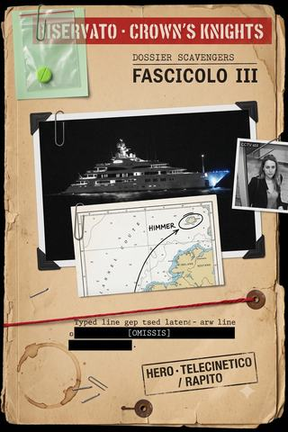

Dossier Scavengers · fascicolo III
Il panfilo
Dal vertice della finanza londinese a una crociera di lusso sequestrata da terroristi che nessuno riesce a vedere. Gli Scavengers si infiltrano per chiudere i conti con Modi Mittal — e scoprono di non essere gli unici predatori a bordo. In coda, un lavoro che aspetta su un'isola.
- ≈ 28 min di lettura
- a cura dell'Analista
- dalle partite a Heroes Unlimited
- anche in EPUB, 1014 KB
Nota dell’Analista
RISERVATO — CAVALIERI DELLA CORONA
Dossier Scavengers · fascicolo III
Il terzo e ultimo fascicolo chiude il caso. Risalita la catena del Connettore Z fino al finanziere Modi Mittal — vertice occulto dei Ghetto Boys, e metaumano egli stesso — i soggetti si infiltrano nella crociera da lui organizzata; e a bordo interviene un terzo attore, il gruppo di metaumani noto come «Leakers», che sequestra la nave con mezzi di guerra elettronica e un’impercettibilità tuttora inspiegata. Vi confluiscono le deposizioni dei soggetti, le trascrizioni delle comunicazioni di bordo, il messaggio rivendicativo dei Leakers e i dati sottratti alla segretaria di Mittal.
Si registra, senza spiegazione, che le menti di Mittal e della sua segretaria risultarono «illeggibili» al soggetto Darko: le fonti di quel dato restano coperte. [OMISSIS].
Gli Scavengers volevano derubare una nave. Qualcuno gliel’ha rubata prima — e alla fine sono passati per eroi. È, dei tre fascicoli, la beffa più compiuta.
Indice
A cura dell’Analista.
- Il panfilo (autunno · il mare verso l’Irlanda) — un’infiltrazione, un sequestro dentro il sequestro, e un ultimo lavoro dal quale i soggetti non fanno ritorno.
Cronologia del caso
Il mondo si conta dall’«evento zero» del 2012. I fatti qui raccolti si svolgono nell’autunno londinese del presente. In grassetto la tranche raccolta in questo volume.
- autunno — Le taglie di Londra (Arlecchino / Miwa) — l’attico di Lord; la taglia di Khan; la strage sul cargo.
- autunno — La caccia ai cinque (Mau / BORIS / Darko) — i cinque HERO dei Ghetto Boys; il parcheggio; la trappola della gabbia.
- autunno — Il panfilo (Darko / Arlecchino / Lord) — la risalita a Modi Mittal; la crociera verso l’Irlanda; l’attacco dei Leakers e il rapimento di Mittal; la partenza per l’Isola di Man, dalla quale dei soggetti non si ha più notizia.
Le date esatte restano incerte, ma i fatti si collocano tutti nel medesimo autunno. Con la partenza dei soggetti per l’Isola di Man la loro traccia si interrompe: il caso si chiude qui, senza seguito.
Il panfilo
RISERVATO — CAVALIERI DELLA CORONA Fascicolo III · l’affare Mittal e il sequestro del panfilo Royal Carlton
Relazione dell’Analista. Il presente fascicolo chiude il caso «Scavengers» — e, per ragioni di cui si dà conto in fondo, lo chiude senza che a chiuderlo sia stata questa unità. Vi si ricostruisce come i soggetti, risalita la catena del Connettore Z fino al suo vertice, si siano infiltrati su una nave da diporto per eliminarne il proprietario, e come da quell’operazione siano usciti — è la circostanza che merita l’apertura — non da assassini, ma da eroi.1
Si dà atto in premessa dell’esito, perché è l’esito a dare senso al resto. I soggetti salirono a bordo per rubare una nave e ucciderne il padrone. Qualcun altro rubò loro la nave e rapì il padrone. E quando tutto fu finito, i soggetti sbarcarono acclamati come parte dell’equipaggio scampato, uno di loro con la promessa di futuri ingaggi, un altro con un lavoro nuovo in tasca. È, dei tre fascicoli, la beffa più compiuta: gli unici a non pagare nulla furono coloro che avevano progettato il delitto.
Si conferma, per l’ultima volta, che una delle fonti di questa ricostruzione non è riconducibile ad alcuno dei soggetti formalmente sentiti. [OMISSIS].
1 · Il nome
Dai documenti e dagli apparecchi sottratti nell’ultimo covo dei Ghetto Boys — e dalla lingua, sciolta in fretta, dell’unico affiliato sopravvissuto a quell’accesso — emerse un nome: Modi Mittal, cittadino di origine indiana, squalo della finanza cittadina, con un patrimonio ufficiale superiore ai cinquanta milioni di sterline.
Individuato il vertice, i soggetti — che a quel punto la stampa già chiamava «Scavengers» — decisero di chiudere i conti una volta per tutte, e senza coinvolgere le autorità. La scelta, coerente con tutto il loro operato, va sottolineata: avevano fra le proprie file un uomo dei Cavalieri della Corona, e disponevano delle prove per far arrestare il Mittal per via legale; preferirono la via propria. Non cercavano giustizia. Cercavano di eliminare un problema — e, dove capitava, di ricavarne un utile.
Un uomo come Mittal non lo tocchi coi tribunali. Ne ho conosciuti, di quelli così, ai miei tempi, prima che l’evento zero mi facesse fuori il patrimonio: gente che possiede i giudici prima ancora dei traffici. Se lo denunci, sei tu a sparire, non lui. L’unico modo di togliere di mezzo uno che sta in cima è arrivarci quando è lontano dalla sua torre — su una nave, per esempio, in mezzo al mare, dove i soldi contano meno dell’acqua. Ci avevo visto giusto. Solo che sulla nave, oltre a noi, era arrivato qualcun altro con la stessa idea. E aveva strumenti migliori dei miei.
La deposizione è del soggetto Lord, ed è, a suo modo, la sola analisi lucida che il fascicolo contenga sul vero bersaglio. Il soggetto aveva ragione su tutto, tranne che sull’esclusiva: non era l’unico ad aver capito che il Mittal andava colto in mare aperto.
L’approfondimento rivelò, sotto la rispettabilità, l’ossatura dell’intera vicenda. Il Mittal finanziava numerose organizzazioni non governative dedite a favorire l’ingresso nel Paese di immigrati, per la quasi totalità centro e sudamericani — la manovalanza dei Ghetto Boys — e a quelle stesse organizzazioni erano collegati flussi di denaro riconducibili al traffico di Connettore Z. Era lui, in altre parole, il vertice occulto della gang; ed era lui, non i cinque metaumani cui i soggetti avevano dato la caccia, la vera testa da recidere.
Vi era, nel Mittal, un ulteriore fatto, che i soggetti scoprirono solo a bordo e che nessuno di loro seppe spiegare: la sua mente non era leggibile.
Ci ho provato due volte, a bordo, in due occasioni buone. Con lui e con la sua segretaria, quel figurino anonimo che lo seguiva ovunque. Di solito entro in una testa come in una stanza: c’è sempre qualcosa, disordine, paura, un pensiero sporco. In loro due, niente. Un vuoto. Non una difesa, che una difesa la sento: proprio un vuoto, come bussare a una porta e sentire che dietro non c’è la stanza. Non me lo so spiegare, e a me le cose che non mi so spiegare non piacciono, perché di solito significano che qualcuno ne sa più di me.
La deposizione è del soggetto Darko, e si riporterà spesso in questo fascicolo, perché è lui — la talpa — a condurne la parte migliore, e a subirne la peggiore.
2 · L’imbarco
L’occasione fu una crociera di lusso che il Mittal aveva organizzato verso l’Irlanda, ospiti numerosi esponenti della finanza cittadina. Il panfilo — il Royal Carlton, quasi duecento metri, un albergo galleggiante — offriva ai soggetti ciò che a terra non avevano mai avuto: il bersaglio e le sue relazioni chiusi per una settimana dentro uno scafo.
L’infiltrazione fu articolata. I soggetti Kamekona e Cherenko salirono a bordo come guardie del corpo di un giovane scapestrato, tal Matt Smith, figlio di un intermediario impossibilitato a partecipare, e si divisero i ruoli con l’efficienza consueta: al colossale Kamekona la parte del simpaticone affabile, al più discreto Cherenko quella dello scontroso dalla faccia cattiva. La copertura reggeva bene: un rampollo viziato e le sue due guardie erano, su quel panfilo, l’immagine più ordinaria del mondo, e il soggetto Kamekona poté scortare il giovane alla piscina e ai bar senza destare il minimo sospetto, osservando intanto ospiti e comportamenti dietro un calice di spumante.
A bordo, in veste di ospite fra gli ospiti, si trovava anche il soggetto Lord, il cui portamento e le cui frequentazioni gli consentivano di muoversi nell’alta società della finanza cittadina con più agio di chiunque altro del gruppo — e con più appetiti, come si vedrà. La sua posizione, apparentemente la più comoda, sarebbe stata al momento decisivo la più inutile. L’alleato Cachorro si inserì fra il personale di servizio, agevolato — così le deposizioni, con la consueta assenza di scrupolo — dalla propria fisionomia latina. Il soggetto Darko salì come tecnico addetto alla manutenzione dei sistemi di bordo. All’esterno, il soggetto Veneziani e il soggetto Guile seguivano a distanza su un peschereccio d’altura, con l’apparenza di una vacanza di pesca; e con loro, questa volta pienamente operativa, il soggetto Miwa.
Completato l’imbarco fra i convenevoli di benvenuto — con il Mittal nella parte del piacente anfitrione — i soggetti a bordo si sparpagliarono per prendere le misure del vascello. Il soggetto Kamekona scortò alla piscina il giovane di cui era ospite, il tale Matt Smith, e vi osservò con distacco professionale le bellezze in costume e, con maggiore attenzione, i comportamenti degli ospiti, facendosi servire spumante dall’alleato Cachorro, impeccabile inserviente in bianco. Il soggetto Cherenko, girando per i ponti, rilevò al solarium del settimo ponte diversi ospiti intenti ad assumere sostanze stupefacenti, senza tuttavia riuscire a stabilire quali; e l’alleato Cachorro, servendo, vide comparire qua e là più di una striscia della medesima polvere. Con ogni probabilità si trattava di Connettore Z, la droga Z-attiva molto in voga fra i più abbienti per il brivido dei poteri temporanei che conferisce — la stessa sostanza il cui traffico i soggetti stavano risalendo dalla strada. Il cerchio, che nel primo fascicolo era una valigetta sottratta a un uomo-pesce, si chiudeva qui, in una striscia tirata su un tavolino di teak da chi quella valigetta, indirettamente, la finanziava. Il denaro che comprava la droga in cima e il denaro che la vendeva in strada erano, si scoprirà, lo stesso denaro.
Il quadro che i soggetti si andavano formando era quello di un mondo chiuso e sicuro di sé, in cui il denaro si divertiva e discuteva d’affari come se l’equipaggio non esistesse — dato, quest’ultimo, sul quale si tornerà, perché è la chiave di tutto.
Una circostanza, notata da tutti i soggetti a bordo, merita di essere registrata perché è il vero soggetto di questo fascicolo, prima ancora dei Leakers: gli ospiti non vedevano l’equipaggio. Non per effetto di alcun potere — semplicemente non lo guardavano. Discutevano di affari riservati a un palmo da un cameriere come davanti a un mobile, decidevano di milioni senza abbassare la voce dinanzi a chi serviva loro da bere o rifaceva loro il letto.
Ne ricavò l’osservazione più acuta dell’intera vicenda, riferiscono i soggetti, l’alleato Cachorro, che fra tutti occupava a bordo la posizione più umile: che la cosa più triste vista su quella nave era gente che non vedeva altra gente, e che proprio quella cecità, alla fine, li avrebbe salvati, perché nessuno guarda chi non conta. La cecità dei ricchi verso chi li serviva fu, per i soggetti, la migliore delle coperture — e sarà, si vedrà, la stessa cecità che i Leakers avrebbero sfruttata contro i ricchi.
3 · Le menti vuote
I due giorni successivi furono dedicati alla raccolta d’informazioni, condotta con un metodo che, va riconosciuto, era all’altezza del bersaglio.
Il lavoro fu reso più arduo dalle perquisizioni cui gli imbarcati erano stati sottoposti alla salita, che avevano impedito ai soggetti di portare a bordo apparecchi di registrazione; sicché gran parte della raccolta si affidò alla memoria, con gli ospiti che discorrevano di affari riservati a un palmo dai soggetti senza degnarli di uno sguardo. Il soggetto Darko installò comunque un microfono nella cabina del Mittal e sottrasse alla segretaria una memoria portatile, che fece pervenire per via telematica al soggetto Miwa perché ne esaminasse il contenuto, e di cui poté intanto scorrere di sfuggita la contabilità. Ne emerse la conferma di quanto già sospettato: finanziamenti a organizzazioni che agevolavano l’immigrazione, e un flusso di denaro verso un conto domiciliato allo stesso indirizzo di uno dei locali dei Ghetto Boys. La catena era completa. Restava da recidere la testa.
L’alleato Cachorro, dal canto suo, continuava nel proprio servizio con un disagio crescente, sempre più persuaso che nella perfetta impercettibilità dell’equipaggio agli occhi degli ospiti vi fosse qualcosa di innaturale. Aveva ragione, e non poteva saperlo: la stessa qualità che rendeva invisibile chi serviva sarebbe di lì a poco divenuta l’arma di chi attaccava.
Ma è alle due menti illeggibili che l’unità torna, perché in esse è il seme di ciò che seguì. Il Mittal e la sua segretaria opponevano al soggetto Darko lo stesso vuoto. E il Mittal, si sarebbe scoperto di lì a poco, non era un finanziere qualunque protetto da guardie del corpo: era, egli stesso, un metaumano, e dei più potenti.
Avrei dovuto capirlo dal vuoto. Il vuoto non è normale. Ma io ero preso dalla contabilità, dai conti, dalle prove — dal mio lavoro di sempre, insomma, che è raccogliere prove per gente che poi le usa a modo suo. Ho fatto il mio lavoro e non ho guardato la cosa importante, che era: perché non riesco a leggerlo? La risposta l’ho avuta dopo, sotto una tempesta di proiettili, ed era la risposta peggiore. Ma questo viene dopo.
Su iniziativa dei soggetti Cherenko e Miwa, il gruppo decise di forzare la situazione. Il soggetto Veneziani, sfruttando la propria natura anfibia, collocò sull’asse dell’elica del panfilo una modesta carica esplosiva — gli ultimi residui del deposito del soggetto Lord — allo scopo di arrestare temporaneamente la nave e creare l’occasione per un intervento più incisivo.
Questo è il genere di lavoro per cui sono nato, e lo dico senza modestia perché la modestia non l’ho mai avuta. Duecento metri di nave da ricchi sopra la testa, l’acqua nera, e io là sotto tranquillo come a fare due bracciate al Molosiglio. Ho trovato l’asse dell’elica, ho messo su la carica di Lord — quel poco che restava — e sono risalito che manco un pesce mi aveva visto. Loro, quelli sopra, coi loro cocktail e i loro milioni, non sapevano che tutta la loro crociera dipendeva da un napoletano che gli respirava sotto la chiglia. Mi è piaciuto saperlo io, e loro no.
La carica esplose. La nave si fermò, fra un allarme modesto dei passeggeri e la pronta mobilitazione dell’equipaggio, che vi lesse un guasto o l’urto con un ostacolo sommerso. Dal peschereccio, il soggetto Miwa ascoltava soddisfatta i rapporti del soggetto Guile, che sorvegliava la scena a distanza con un semplice binocolo, confidando nella propria vista. Tutto procedeva secondo il piano dei soggetti. E poco dopo, prima che potessero muoversi, la situazione uscì dalle loro mani e passò in altre.
4 · Il buio
Il primo segnale lo colse il soggetto Guile, dal peschereccio, con la propria vista: uno strano fenomeno elettrico a prua del panfilo, presso l’eliporto di bordo. Nel medesimo istante tutti i sistemi del peschereccio ammutolirono — radio, navigazione, rete — a eccezione di una vecchia radio a onde corte, ancora legata ai ponti radio di terra. I soggetti Guile e Miwa, di colpo ciechi e sordi rispetto al panfilo, non poterono far altro che decidere di inviare a nuoto il soggetto Veneziani — capace, per la propria natura anfibia, di raggiungere la nave a una velocità che le deposizioni valutano attorno ai cento chilometri l’ora — perché indagasse di persona. È da questa decisione che muove la successiva, teatrale ricomparsa dell’anfibio a bordo. La stessa cosa, in grande e in peggio, stava intanto accadendo sul Royal Carlton.
Poi, su ogni schermo della nave, apparve una donna.
«Io sono Bralani. Noi siamo i Leakers. Siamo inafferrabili. Non fate resistenza e andrà tutto per il meglio. I sistemi della vostra nave sono sotto il nostro controllo. Non cercate aiuto.»
Il messaggio è riportato dalle deposizioni in forma concorde. Alla sua comparsa seguirono la cortina di guerra elettronica che isolò il panfilo dal mondo, e la comparsa sui ponti di uomini incappucciati, in armatura antisommossa — simili, notò il soggetto Darko, a quelle in dotazione ai Cavalieri della Corona — armati di armi automatiche silenziate. Costoro presero a sequestrare alcuni ospiti e a rinchiudere gli altri nelle cabine, cortocircuitandone le serrature.
Anche i soggetti a bordo furono colti alla sprovvista. I soggetti Kamekona e Cherenko, sorpresi in una delle cabine, vi rimasero dapprima rinchiusi, per poi forzare la serratura con le capacità del secondo e muoversi con cautela per i ponti, soli, senza sapere dove fossero gli altri né come comunicare, poiché il disturbo aveva reso muti anche i loro apparecchi. Gli stessi terroristi, notarono, parevano non vederli — segno che il velo dei Leakers non distingueva fra un ospite e un intruso: sottraeva alla percezione chiunque non fosse un loro bersaglio designato.
I Leakers — gruppo di metaumani noto a questa unità per una lunga serie di azioni eclatanti e per la fama di essere, appunto, inafferrabili — non erano saliti per rubare. Erano saliti per prelevare. E disponevano di una capacità che rendeva vano ogni allarme: a bordo, nessuno riusciva a vederli con chiarezza, come se un velo li sottraesse alla percezione. Lo stesso velo, si noti, che aveva reso invisibile l’equipaggio agli occhi degli ospiti — solo che ora erano i predatori a portarlo.
Si dà atto che, in questo frangente, i soggetti scoprirono di essere, per una volta, i meno pericolosi a bordo.
5 · Gli inafferrabili
Ciò che i soggetti fecero durante il sequestro fu, come di consueto, meno un piano che una somma di iniziative individuali; e fu il soggetto Darko a spingersi più avanti.
Curioso dell’evanescenza dei Leakers, ne seguì uno fino all’eliporto di prua, presso il quale si concentravano le scariche elettriche notate dal soggetto Guile, e vide da vicino il gruppo.
Erano fermi, tranquilli, come una squadra che ha fatto la stessa cosa cento volte. Nessuna eccitazione. Attorno l’aria era piena di scariche, come piccoli fulmini, ed era da lì che tenevano la nave per la gola: tutta l’elettronica di bordo passava per le loro mani. Ho contato cinque figure di comando. Ho memorizzato le facce e i nomi che si davano. È il mio mestiere, memorizzare i dettagli di una scena. Peccato che, di solito, la scena la memorizzo dopo che è successa, con calma, col nastro tirato attorno. Quella volta ci ero dentro, e il nastro attorno lo stavano tirando a me.
Le deposizioni registrano cinque nomi: Liberdad; Philip Mallory, detto «Mr. Extreme»; Analogic; Mala Madhu, detta «Bralani»; e Jakob Fritzl, detto «Todlich».2 La sua ricognizione durò poco. Fu uno dei Leakers — quello di mezza età, dalla zazzera, indicato negli atti come «Mr. Extreme» — a tradirlo: con un semplice gesto della mano, senza voltarsi, richiamò l’attenzione della manovalanza terrorista sulla presenza del soggetto Darko, che fu ammanettato e condotto verso la sentina con gli ostaggi di minor conto. Là sotto, in un locale in cui si accalcavano i lavoratori dell’equipaggio — pakistani, cingalesi, tamil, indonesiani —, il soggetto ebbe modo di misurare la propria situazione. Fu allora che tentò il colpo che è, insieme, il più abile e il più tipico dei suoi.
Mi stavano portando giù. Sapevo che il mio corpo, in sentina, era perso: ammanettato, in mezzo agli altri. Così, un attimo prima che mi buttassero nell’ascensore, sono passato. Ho lasciato il mio corpo e sono entrato in uno dei due che mi scortavano. Da dentro il casco di un terrorista ho aiutato l’altro a caricare il mio stesso corpo svenuto nell’ascensore e a mandarlo giù. Vi assicuro che vedere il proprio corpo che scende in un ascensore, mentre tu resti su nella testa di un altro, è un’esperienza che non auguro. Ma funzionava. Ero dentro i Leakers, e loro non lo sapevano.
Tenere un corpo non è gratis. Più a lungo ci resti, più fatichi, e questo era un corpo addestrato, con la sua volontà che spingeva per rientrare come l’acqua sotto una porta. Mentre lo tenevo, mi arrivavano nelle orecchie del casco gli ordini radio degli altri Leakers, che si davano del «noi» come una vera famiglia — cosa che noi non siamo mai stati. E io ero lì, dentro uno di loro, a fingermi loro, con il mio vero corpo svenuto due ponti più sotto in mezzo ai cingalesi. In quei minuti ho pensato una cosa strana: che ero più al sicuro nella testa di un terrorista che nella mia. È il riassunto della mia vita, se ci pensate.
Dalla testa del proprio ostaggio-veicolo, il soggetto Darko ristabilì il contatto con l’alleato Cachorro e apprese, con gli altri Leakers, che al ponte 7 — dove alloggiava il Mittal — si stava incontrando una resistenza inattesa. Vi si diresse con la squadra terrorista, e vi assistette a ciò che nessuno dei soggetti aveva previsto.
6 · Lo scudo
Mentre il soggetto Darko risaliva nel corpo del proprio ostaggio, gli altri soggetti a bordo si andavano ricongiungendo. A essi si aggiunse, con una certa teatralità, il soggetto Veneziani: avvertiti i compagni sul peschereccio della situazione, aveva raggiunto il panfilo a nuoto e ne era emerso con un salto fuori dall’acqua che le deposizioni descrivono, non senza sarcasmo, «modello Aquaman». Riuniti così sui ponti di poppa, i soggetti risalirono verso il settimo ponte, dove alloggiava il Mittal, e vi si trovarono di fronte a una scena che nessuno di loro aveva previsto.
Al ponte 7 era in corso una battaglia silenziosa. Lungo il corridoio, il fuoco delle armi silenziate dei Leakers si infrangeva contro una parete invisibile: proiettili fermi a mezz’aria, altri respinti a rimbalzare sulle pareti di legno pregiato. All’origine di quella parete stava, inginocchiato, il Mittal: una mano alzata, il volto contratto nello sforzo, a proteggere dietro di sé la segretaria accucciata. Il finanziere era un metaumano telecinetico, e dei potenti; e reggeva, da solo, uno scudo cinetico contro l’intero drappello.
Ecco perché la sua mente era un vuoto. Ecco perché i suoi affari non lasciavano tracce leggibili. Il soggetto Darko lo comprese in quel momento, e non gli servì a nulla.
I soggetti, ricongiuntisi in parte sul ponte, valutarono la situazione con l’unico criterio che avessero mai applicato: il proprio interesse. Non potevano agire sul Mittal, unica barriera fra loro e la tempesta di proiettili. Decisero dunque di prendere ciò che potevano: la segretaria, che stringeva un tablet e alcuni fogli, e con lei i suoi dati.
Il resto dei soggetti era intanto risalito dai ponti di poppa, sbirciando non visto la scena grazie al frastuono della battaglia. Fu l’alleato Cachorro, forte della propria divisa da equipaggio, a gridare al Mittal di arretrare verso di loro, come per portarlo in salvo; e nel medesimo istante a ricorrere al proprio strumento più collaudato.
Il messicano ha avuto l’idea giusta, che è sempre la più vigliacca: non toccare il telecinetico, che è l’unica cosa che ci tiene in vita, e prendere la donna. Ha proiettato nelle teste dei Leakers il suo cavallo di battaglia, il mostro, quella canocchia che ci perseguita anche quando non c’è. Si è scatenato il panico, i fucili hanno aperto un fuoco ancora più fitto, e lo scudo di Mittal ha cominciato a cedere. Io — lo confesso, tanto è agli atti — ho pure sparato, per aiutare i miei, e ho preso più il soffitto che i nemici, e mi hanno preso a botte i terroristi stessi per togliermi l’arma. Non sono un tiratore. Il capo dei Cavalieri me lo dice sempre: tu sei da appoggio, gli altri sparano, tu no. Aveva ragione anche stavolta.
Il Mittal, sotto la pressione crescente, arretrò facendo scudo alla segretaria fin verso i soggetti, che erano precisamente ciò che gli mancava per completare la propria rovina: non un soccorso, ma cinque persone interessate soltanto a ciò che la donna stringeva fra le mani.
Alla scena si aggiunse infine la comparsa del più temuto dei Leakers. Mr. Extreme — ex operativo dei servizi d’oltreoceano, psionico di rara potenza — salì al ponte per piegare la resistenza del Mittal. Il soggetto Darko, ancora nel corpo del proprio ostaggio, ne fu testimone diretto, e la sua deposizione su questo punto è, a giudizio dell’unità, la più inquietante del fascicolo.
Mi aspettavo i fulmini. Con uno che chiamano Mr. Extreme ti aspetti i fulmini. Invece è arrivato un signore di mezza età con la zazzera, si è messo davanti a Mittal, e non ha fatto niente. Silenzio. Nessun oggetto che vola, nessun lampo, nessuno che si tiene le tempie. Solo silenzio, e Mittal — un telecinetico che teneva testa a dieci fucili — che a poco a poco si quieta, si spegne, come una candela sotto un bicchiere. «Il bersaglio è quieto», ha detto quello. «Venite a prenderlo e andiamocene.» I poteri che fanno rumore fanno paura. Quelli che fanno silenzio la fanno di più.
Ai soggetti, dell’esito, non importava. Nessuno di loro aveva intenzione di affrontare un metaumano sconosciuto e di quella caratura — di cui il solo Darko sapeva qualcosa, dai verbali dei Cavalieri — per difendere un finanziere che volevano morto. Resistettero a stento a un’improvvisa, violenta pressione psionica che parve schiacciarli tutti; poi, approfittando del caos, si ritirarono con la segretaria verso i ponti inferiori, lasciandosi il Mittal alle spalle proprio mentre l’altro ascensore si apriva. Il soggetto Darko, all’ultimo istante, abbandonò il corpo del Leaker e vi rientrò nel proprio appena in tempo: perché sull’eliporto, dal corpo di Bralani, si sprigionò una cupola d’energia che avvolse l’intero gruppo dei terroristi — e i loro ostaggi, fra cui il Mittal — e li fece svanire. I Leakers avevano preso ciò per cui erano venuti. Se ne andarono come erano giunti: senza che nessuno, in fondo, li avesse mai visti bene.
7 · I salvatori
Del Mittal, da quel momento, si perdono le tracce. Questa unità lo annota fra i rapiti, non fra i morti: distinzione che ai fini del caso conta poco, giacché la testa dei Ghetto Boys era comunque stata recisa — non dai soggetti, ma da altri, e a insaputa dei soggetti stessi. Il fine per cui erano saliti a bordo era stato raggiunto da mani terze. È il cuore della beffa, e il cuore del fascicolo.
Restava la segretaria, che i soggetti avevano trascinato con sé nella ritirata fino al ponte 3, alla darsena d’imbarco. L’alleato Cachorro avrebbe voluto risalire a recuperare anche il Mittal; il soggetto Veneziani troncò la discussione fulminando con una scarica la console di comando dell’ascensore, rendendolo inservibile. Quindi si occupò della donna, che dava in escandescenze per lo shock: dopo averle sottratto telefono e tablet e averla malamente insidiata perché rivelasse i segreti del proprio datore — arrivando a minacciare di gettarla a mare —, la gettò effettivamente a mare, e si tuffò a trascinarla a nuoto fino al peschereccio in avvicinamento, tramortendola senza troppi complimenti quando prese a dibattersi. > La signorina, sì. Guardate, io lo so come suona. Ma mettetevi nei panni miei: fuori c’erano i terroristi che si portavano via il capo, la nave era un manicomio, e io avevo tra le mani l’unica persona che sapeva dove stavano i soldi. Che facevo, le offrivo un tè? L’ho portata via. In acqua con me la signorina stava benissimo, respiravo per due. È che strillava, e in acqua uno che strilla si stanca e affoga, quindi le ho dato un colpetto per il suo bene. Tutto qua. E comunque le ho salvato la vita, perché sulla nave i marines finti l’avrebbero interrogata per un mese. Io invece l’ho solo alleggerita del tablet. Chi è il gentiluomo, alla fine?
I suoi dati — quelli sì — restarono nella disponibilità dei soggetti, e con essi un filo ancora aperto sul perché certe menti, a bordo, fossero illeggibili.3
Quanto al resto, fu commedia. I soggetti superstiti si diressero al ponte di comando, trovandolo deserto: dell’equipaggio, nessuna traccia. Recuperarono lungo il cammino il soggetto Lord, che aveva trascorso l’intero sequestro all’oscuro di tutto, chiuso nella propria cabina.
Mi hanno rinchiuso dentro senza che me ne accorgessi. Ero, come dire, occupato. Una passeggera, una serata lunga, del buon whisky — troppo, lo ammetto. Mi sono svegliato con la porta bloccata e la nave ferma, e ho pensato al peggio: che i ragazzi avessero fatto una delle loro. Poi ho saputo che, per una volta, il disastro non l’avevamo combinato noi. È stata una sensazione nuova. Quasi piacevole.
Ripristinatisi i sistemi di bordo dopo la partenza dei Leakers, e trovandosi l’alleato Cachorro l’unico membro «operativo» dell’equipaggio superstite, i soggetti lo nominarono seduta stante vice-ammiraglio del panfilo; ruolo che egli esercitò rispondendo alle decine di richieste d’aiuto sull’interfono con un imperturbabile «non vi sento, non funziona, no entiendo». Alla proposta del soggetto Veneziani di approfittarne per depredare la nave e i passeggeri prigionieri, il soggetto Lord oppose il proprio unico, autentico principio.
«Pirati, banditi, sciacalli! Siete matti. Avremo più utile aiutandoli e passando per i loro salvatori.»
Il soggetto Lord non è un uomo migliore degli altri. È soltanto un professionista, e sapeva che a bordo di una nave sequestrata da terroristi il ruolo più redditizio non è quello del predatore ma quello del soccorritore. Fece dunque comunicare che i soccorsi erano in arrivo, e provvedere alla liberazione dell’equipaggio, rinchiuso e semisoffocato in sentina — operazione per la quale il soggetto Cherenko dovette forzare con le proprie capacità il boccaporto saldato alla meglio. Fra i lavoratori stipati là sotto — pakistani, cingalesi, malesi, tamil, filippini, eritrei — si trovava anche, va detto, il corpo del soggetto Darko, tornato in sé e alquanto scosso dall’esperienza, che si era già raccomandato per via telepatica all’alleato Cachorro con un accorato «salvatemi».
A complicare la commedia giunse, sul canale di soccorso, l’annuncio di un elicottero: «Qui Bravo Quindici dei Royal Marines. Arrestate i motori e preparatevi all’abbordaggio.» Prima che l’improvvisato vice-ammiraglio potesse rispondere a tono, il microfono fu afferrato dal soggetto Cherenko, che apostrofò i militari di Sua Maestà con un «e che cavolo volete, siamo in acque internazionali», per poi vederselo strappare di mano da un soggetto Lord incredulo alle proprie orecchie. La nave fu infine dirottata verso il più vicino porto irlandese.
L’abbordaggio finale fu opera di uomini presentatisi come Royal Marines, che il soggetto Lord — occhio esperto — giudicò invece appartenenti ai servizi, per portamento e per equipaggiamento. Ripresero la nave, liberarono i passeggeri, contarono i rapiti: il proprietario e nove ospiti. E dinanzi alla grancassa mediatica che si scatenò all’attracco, l’attenzione si spostò tutta sui personaggi di rango coinvolti, mentre i membri dell’equipaggio — i soggetti — venivano identificati e rilasciati senza approfondimenti. Il soggetto Veneziani nella parte dell’inserviente tonto («cambiavo le lenzuola e basta»), i soggetti Kamekona e Cherenko in quella di guardie del corpo diligenti, con la promessa del loro datore di tenerli presenti, in futuro, come liberi professionisti.
All’attracco, il molo era già gremito di giornalisti, fotografi e forze dell’ordine, richiamati dal rango dei passeggeri e dalla gravità dell’azione dei famigerati Leakers. Mentre il peschereccio dei soggetti si allontanava con discrezione — a bordo la segretaria e i suoi dati —, il soggetto Lord provvedeva, con l’efficienza di sempre, a mettere in sicurezza la propria posizione: contattati alcuni ex commilitoni tuttora in servizio presso le autorità irlandesi, fece in modo di risultare già sottoposto all’interrogatorio di rito, così che nessuno avesse motivo di trattenerlo oltre. La grancassa mediatica fece il resto: l’attenzione si concentrò sui personaggi di rango rapiti, e i modesti membri dell’equipaggio scivolarono fuori dall’inquadratura.
Così i soggetti sbarcarono. Erano saliti su quella nave per svaligiarla e uccidere; ne scesero come vittime scampate e servitori encomiabili, con in tasca i dati della segretaria e la benevolenza delle autorità.
Non sfugga, a chi legge, la simmetria che questo fascicolo ha inseguito dalla prima riga. Sul Royal Carlton si affrontarono due gruppi di predatori, e ciascuno era invisibile a modo suo. I Leakers lo erano per un potere, che sottraeva alla vista chi non fosse loro preda. I soggetti lo erano per una ragione più antica e più triste, quella osservata dall’alleato Cachorro: perché servivano, e chi serve non viene guardato. Gli ospiti non videro né gli uni né gli altri finché non fu troppo tardi. E quando le acque si furono chiuse, i predatori col potere si erano portati via il padrone di casa, e i predatori senza potere sfilavano fra gli applausi. Questa unità non trae morali. Registra soltanto che, in un mondo che teme i mostri e li cerca in cielo, i più efficaci indossano una divisa da cameriere.
Rientrati a Londra, i soggetti ebbero conferma di ciò che avevano ottenuto senza farlo. Una rapida verifica del soggetto Veneziani accertò che l’attacco che i Ghetto Boys preparavano ai rivali era stato annullato: ordini dall’alto, un taglio dei finanziamenti, la disposizione di non dare nell’occhio avevano congelato ogni azione. Aver tolto di mezzo il Mittal — chiunque l’avesse tolto — aveva prosciugato la gang alla radice. La missione per cui i soggetti si erano imbarcati era, di fatto, riuscita. Non l’avevano compiuta loro; ne raccoglievano ugualmente il frutto. Non era stato possibile consegnare all’autorità un numero congruo di banditi, né riscuotere le relative taglie; ma quanto ricavato per vie non ufficiali — i dati, gli agganci, la reputazione — ricompensava a sufficienza.
Resta, per chiudere, l’unico atto che guarda oltre questo fascicolo. Il soggetto Lord, sceso a terra, fu contattato da un proprio conoscente irlandese — di quelli, come Kravos, che non fanno domande — con la proposta di un lavoro grosso, per conto del governo britannico: nulla di ufficiale. Si tratterebbe di infiltrarsi sull’Isola di Man, nel Mare d’Irlanda, occupata due anni prima dal movimento ecoterrorista HIMMER, che vi ha respinto una precedente incursione di forze speciali sotto egida internazionale con perdite gravi, tenute nascoste da una cortina di disinformazione.4 Il governo cerca, ora, piccoli gruppi non allineati per raccogliervi informazioni.
Un lavoro, in altre parole, che nessuno stato riconoscerebbe come proprio, per un gruppo che nessuno stato riconosce come proprio: un accoppiamento perfetto. I soggetti hanno accettato — per denaro, per reputazione, e per quel «gusto» che, unico movente, ricorre in ogni loro deposizione fin dalla prima riga del primo fascicolo. Salparono per l’Isola di Man in una data che gli atti non fissano con precisione.
E da quel momento, di loro, questa unità non ha più saputo nulla.
Il curatore chiude qui il caso «Scavengers», e deve farlo in un modo che non gli è consueto: senza un esito. Dei soggetti, dopo la partenza per l’isola, non è pervenuto a questa unità un solo ulteriore riscontro — non un fermo, non un avvistamento, non un cadavere cui dare un nome. La fonte interna che ha reso possibili questi tre fascicoli si è, alla medesima data, ammutolita: l’ultimo materiale utile porta il timbro di quei giorni, e dopo di esso non c’è che silenzio. Non è dato sapere se i soggetti siano caduti su quell’isola, o vi si siano dissolti, o abbiano semplicemente smesso — come smettono, prima o poi, tutti i cacciatori — di lasciare tracce.
Non seguirà un quarto fascicolo. Non perché manchino le fonti: perché mancano i fatti. Un dossier registra ciò che accade, e a un certo punto, dei soggetti, non è più accaduto nulla che qualcuno abbia potuto raccontare. Resta agli atti quanto precede — tre fascicoli, nessuna condanna, molti morti senza nome, e una banda di uomini pericolosi inghiottita da un’isola nel Mare d’Irlanda come da una botola. Il curatore consegna a chi legge, senza pretendere di dimostrarla, la sola conclusione che gli riesca di trarne: che a storie come questa non si dà mai una vera fine — soltanto un ultimo foglio, e poi la mano che scriveva, e che si ferma. [OMISSIS].
Da dove viene questo fascicolo
Questo dossier non è mai passato per un archivio di Scotland Yard. È nato attorno a un tavolo, come tutte le storie migliori.
Il Dossier Scavengers deriva dalle partite a Heroes Unlimited — il gioco di ruolo supereroistico di Kevin Siembieda per Palladium Books (1984), sul suo sistema Megaversal — giocate al Brainstorm Club, associazione di giochi di ruolo e da tavolo di Faenza (RA). Dietro ogni deposizione di questo fascicolo — il consulente psionico che verbalizza le scene del crimine che lui stesso ha ripulito, il cacciatore che odia gli HERO, la genietta giapponese che scivola nella sociopatia, l’ucraino da laboratorio, il napoletano anfibio — c’è una persona vera, seduta a un tavolo vero, che una sera ha deciso cosa il suo personaggio avrebbe fatto. Il resto è soltanto trascrizione (e qualche riga coperta).
Al Brainstorm Club si gioca da più di trent’anni, e non a un gioco solo: oltre a Heroes Unlimited, ci si siede a Brancalonia, a Rogue Trader, ad Apocalisse, a Dungeons & Dragons e a molti altri giochi di ruolo. Il gruppo che ha dato vita a questo dossier porta avanti le proprie campagne da quasi quindici anni.
Il club accoglie nuovi giocatori da tutta la Romagna, e tiene sessioni dedicate ai più giovani — bambini dai 9 ai 15 anni, ragazzi dai 16 ai 19 — per imparare non soltanto a giocare, ma anche a dirigere il gioco: a costruire mondi e a raccontare storie come questa.
Se una di queste deposizioni vi ha tenuto compagnia, ricordate che è cominciata con un tiro di dado e con qualcuno che, a un tavolo di Faenza, ha detto: «il mio personaggio, invece, fa così».
Brainstorm Club — Faenza (RA)
brainstormclub.it · info@brainstormclub.it
Note
Si conserva la denominazione «Scavengers», adottata dai soggetti. La nave, Royal Carlton, batteva bandiera di comodo; l’esatta giurisdizione dei fatti di bordo è, agli atti, controversa.
[OMISSIS].↩︎Le grafie sono quelle ricavate dalle deposizioni e dai successivi riscontri. Dei cinque, a questa unità risultano documentati con certezza i soli Madhu e Mallory. Degli altri tre — Liberdad, Analogic, Fritzl — restano il nome di battaglia e poco più.
[OMISSIS].↩︎I dati sottratti alla segretaria non sono confluiti presso questa unità. Restano nella disponibilità dei soggetti. Se ne raccomanda, ove possibile, l’acquisizione.
[OMISSIS].↩︎L’Isola di Man si trova nel Mare d’Irlanda, fra Gran Bretagna e Irlanda. La natura, la consistenza e le finalità del movimento HIMMER esulano dal presente fascicolo e, per quanto detto in chiusura, non hanno trovato presso questa unità alcuna trattazione ulteriore.↩︎
Preferisci leggerlo nel tuo lettore, o portartelo offline?
⤓ EPUB 1014 KB